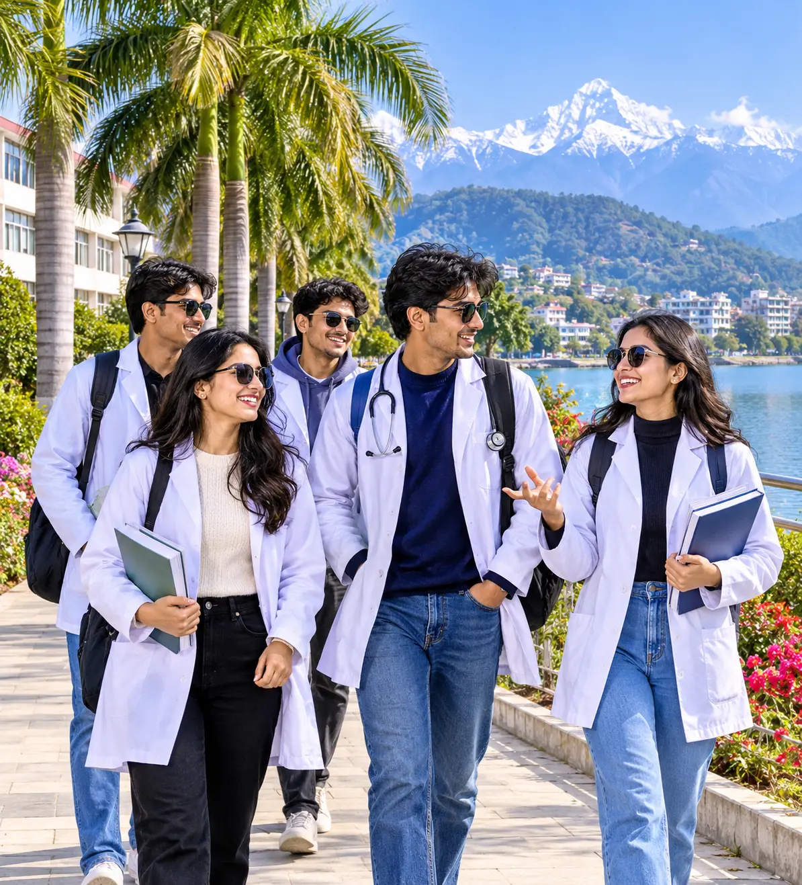
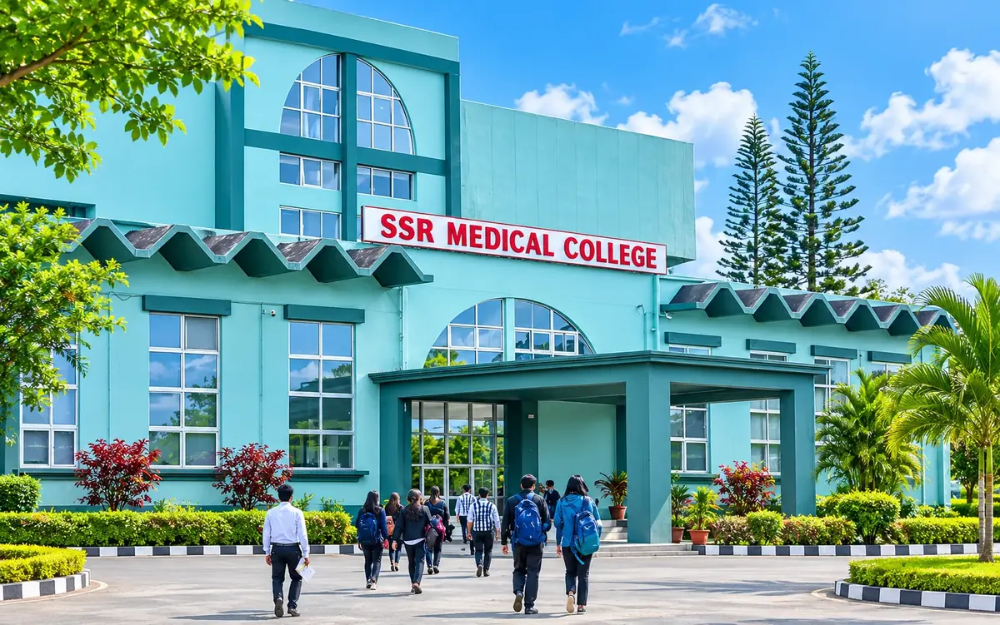
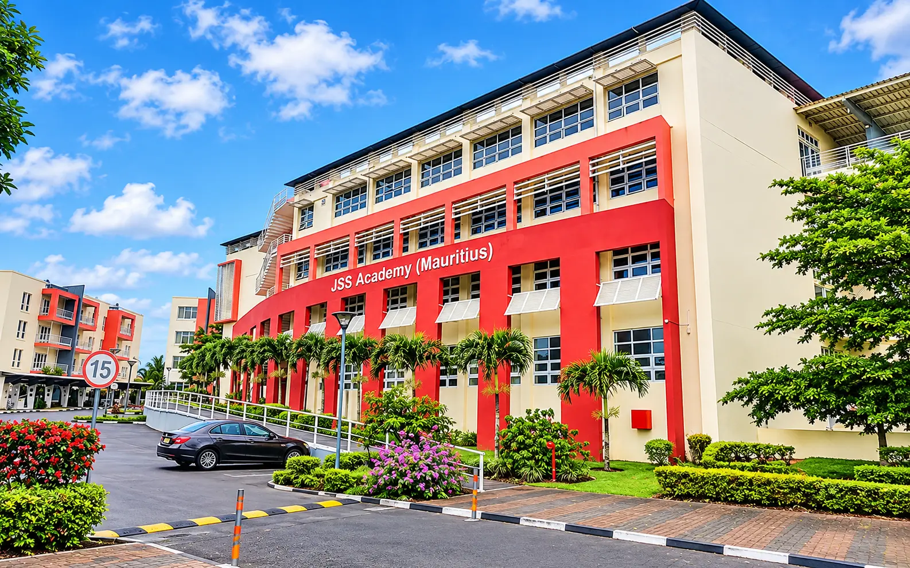
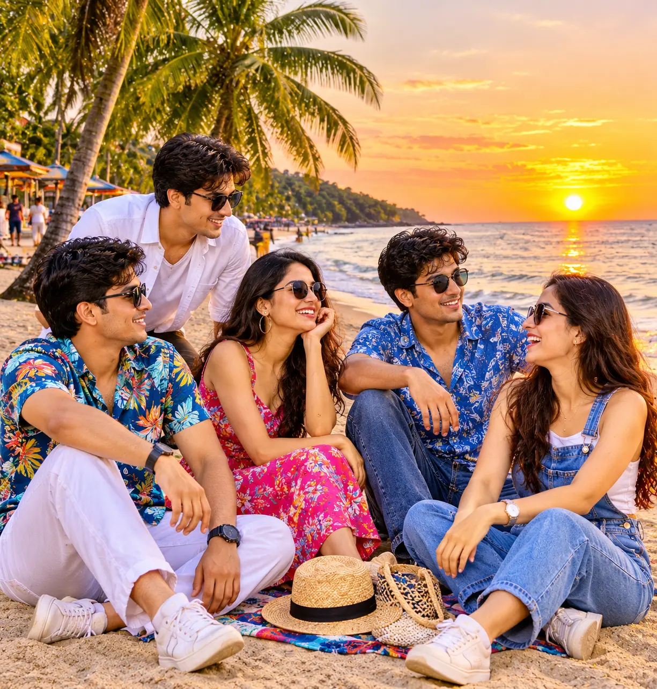

FMGE results well above average
In the December 2025 FMGE, 42.86% of Mauritius graduates passed, against 23.94% of all candidates. SSR Medical College’s graduates passed at 56.16%.
An English-medium MBBS less than six hours from Chennai, on an island where most families share Indian roots and Diwali is a public holiday. Graduates pass FMGE at well above the national rate — and we explain the one rule you must check before choosing a college.

A small island with a short list of colleges — and a few real advantages over the bigger destinations.
In the December 2025 FMGE, 42.86% of Mauritius graduates passed, against 23.94% of all candidates. SSR Medical College’s graduates passed at 56.16%.
Most Mauritians have Indian roots. Diwali and Maha Shivaratri are public holidays, temples are everywhere, and vegetarian food is easy to find.
Air Mauritius flies Chennai to Mauritius direct in under six hours, so coming home for a holiday is easy for students from the south.
The course, textbooks and exams are in English. There is no new language to learn before you can study — or talk to most patients.
A short time difference means calls home fit naturally into your day, every day of the course.
Daytime highs stay between about 24°C and 30°C all year. No snow gear, no adjusting to minus temperatures.
A direct MBBS in ten six-month semesters, followed by a year of internship. There is no pre-medical year. Here is how it adds up.
Anatomy, physiology and biochemistry. You must pass Phase I before moving on.
Pathology, pharmacology and microbiology, with your first hospital postings.
Medicine, surgery, paediatrics and obstetrics on the wards of government hospitals, ending in the final university exam.
Supervised practice in Mauritian government hospitals. NMC requires it in Mauritius, not in India.
Confirm it in writingClear the licensing exam, complete any internship NMC asks of you, and register to practise.
In all, plan for six years in Mauritius. 80% physical attendance is required to sit university exams, and intakes run in August/September and February/March.
Mauritius meets most of NMC’s conditions easily. The one to watch is the internship — so we explain it before you look at a single fee.
Anna Medical College’s own academics page has said foreign students do the internship in their home country — which would not meet NMC’s rule for students who joined after November 2021. JSS Mauritius welcomed its first MBBS students in February 2026, so it has no graduates or FMGE record yet.
Sources: SSR Medical College, course page; Future MBBS guide, with NBEMS FMGE data (31 July 2026); Mauritius Times, JSS inauguration (Feb 2026). Rules can change; we re-check them for every student.
The oldest medical college in Mauritius, with the longest FMGE record and a documented internship arrangement for Indian students.
Run by the JSS group of Mysuru, with a curriculum designed around NMC’s. We confirm its internship plan in writing before recommending it to you.
Teaching MBBS since 2012, with a University of Technology, Mauritius degree. Published statements on where foreign students do the internship differ, so we get it confirmed in writing before you pay.
Status as of Nov 2026, from each college’s published information. Hearing about a different college in Mauritius? Ask us to check it.
Every college here is checked against the NMC conditions, internship first. Each page shows the full fee breakdown.
Teaching MBBS since 2012, with its degree awarded by the University of Technology, Mauritius. Pre-clinical years are on the Montagne Blanche campus, clinical years at Flacq Hospital in the east. Its graduates passed FMGE at 34.48% in December 2025, against 23.94% of all candidates.


Tell us which ones. We get each college’s internship plan for Indian students confirmed in writing — free.
Ask a counsellorAn average, all-in budget — the middle of the colleges we recommend, not the highest quote. Each college’s own page has its full breakdown.
Tuition, hostel with meals and health insurance added together, using the middle of the published fees.
Indicative averages as of Nov 2026, from SSR Medical College’s published fees and JSS Mauritius’s official fee table. Fees are set in US dollars; 1 USD = ₹95 (as of 26 Oct 2026). Personal spending and the student visa are extra — your counsellor confirms the exact figures for your intake.
Every point below must be true for your degree to count in India.
One counsellor, from your first call to your first lecture — and after.
Your NEET score, budget and goals, in one honest conversation.
The college’s internship plan and every fee confirmed in writing.
We prepare your application for the August or February intake.
With the admission letter, we prepare your visa file for Mauritius.
A direct flight from Chennai, airport pickup and hostel check-in.
We stay with you through all six years and the exam back home.
Warm weather, a familiar culture and the sea never far away.

Most rain falls from January to March, and cyclones are possible late in summer; colleges and the government issue clear warnings when one is near.
At SSR, a twin-sharing room is about US$100 a month and the mess about US$170 a month. Hostel rooms are allotted first come, first served.
Dal puri, curries and rice are everyday island food, and vegetarian meals are easy to find.
English in class. Creole and French on the street, and many families also speak Bhojpuri or Hindi.
1 hour 30 minutes behind India, so evenings at home are evenings for you too.
Diwali, Maha Shivaratri and Thaipoosam are celebrated island-wide, with public holidays.
About 5 hours 50 minutes non-stop from Chennai on Air Mauritius, or cheaper one-stop options from about ₹18,300 one-way (Nov 2026).
Start gathering these early. Your counsellor gives you the exact list for your college, including any attestation needed.
Straight answers. Anything else, just ask a counsellor.
One conversation: your NEET score, your budget, and the college’s internship plan confirmed in writing before you pay.